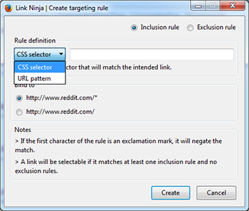
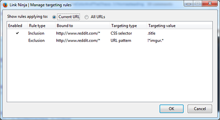

Select multiple links by drawing a rectangle with your mouse and apply actions to the result.
Current version: 1.0
Choose your platform:

What is this?
Link Ninja is a browser extension that allows you to swiftly select multiple links by opening a selection rectangle with your mouse. Once your selection is complete a configurable action can be applied to the result.
Available actions include: open in tabs, open in tabs on demand (ie: load tab contents when clicking the tab), open in tabs deferred (ie: delay between each tab opening), copy to clipboard (allowing custom formatting), and bookmark.
Targeting rules can be set up to restrict link elements available for selection, and can be configured by specifying a CSS selector or URL pattern.
Basic usage
By default, Link Ninja is set up to start selecting by right clicking and dragging.
If no targeting rules are bound to the current URL, links will be filtered by the biggest font size within the selected set.
Upon release of the right mouse button the configured action will be applied to the selection, which, by default, is to open the selected links into tabs. If, instead of releasing the right button, the left mouse button is clicked, a pop-up with all of the available actions will be shown.
If you want to cancel the selection just press the escape key.
Triggers for selection start, selection cancel, and showing the action menu can be configured in the options dialog; as well as action, and visual settings.
Targeting rules
A link will be available for selection when it matches at least one include rule and no exclude rules bound to the current page's URL.
To create a targeting rule:
- Select Create targeting rule from the Link Ninja toolbar dropdown.
- Set the rule type:
For Inclusion rules the results of the match will be available for selection.
For Exclusion rules the results of the match will NOT be available for selection. - Choose the targeting type:
For CSS selector targeting enter any valid CSS3 selector that will target the intended links. For example:a[target='_blank']
For URL pattern targeting enter any wildcard pattern that will match the link's target URL. For example:*.imgur.com/*
- Choose the URL pattern this rule will be bound to.

To manage configured targeting rules select Manage targeting rules from the Link Ninja toolbar dropdown.

You can edit a rule's bound URL and targeting value by double clicking on the appropriate cell, as well as toggle the enabled status.
Right click on a rule for a context menu with more options.
Supported extensions
Link Ninja plays nice with the following extensions:
- Tree Style Tab by Piro (strongly recommended)